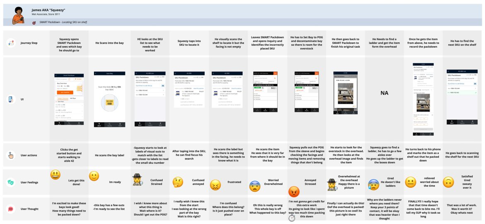
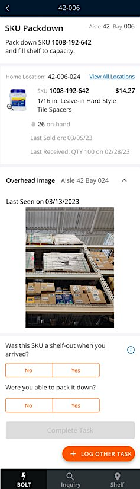
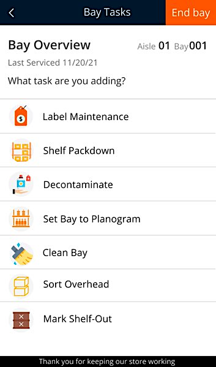
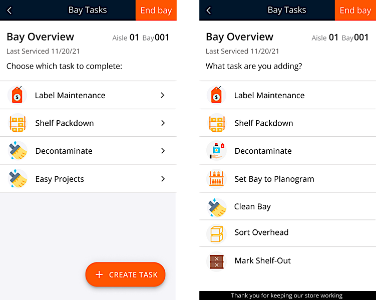

Team
Merchandise Execution (MET)
Overview
Redesigning how MET associates do their tasks on the app
Role
UX Design Intern
Timespan
Jan-May 2023
Tools
Figma
Miro
Background
We had heard many complaints from associates on problems in the application BOLT (Bay Optimized Localized Tasking) they use to maintain the merchandise in stores. Their tasks in the application usually include check-ups to see if any product is out of stock, replacing them with overhead stock if needed, and making sure products are placed according to the store plan. These tasks are given and recorded in the application and require the associates to fill out questions about what condition the particular bay is in.
Problem
The application was built many years ago and has not had many changes since. Therefore, it had a lot of usability issues like not tracking or accounting for any additional tasks the associate does. This results in associates doing only what the app tells them to do and not much more (e.g. if they notice a shelf has items from another shelf misplaced or if a bay is littered they do not have any incentives to fix it). Furthermore, while the associate is doing a task, they cannot take a break or do something else midway as the app does not let the associate continue once a task is exited. Each task requires the associate to answer a questionnaire which can sometimes be as long as 15-20 questions and if the associate stops midway, their progress is lost. Hence, adding to the previous pain point, if they notice something wrong during a task, they would have to quit the task they are currently working on to fix it. These issues result in time wasted in having to repeat tasks and associates not receiving any sort of credit for additional work they may do.
Project Goals
1. Understand the problems in BOLT
2. Understand how the associates use the app
3. Find possible solutions to these problems
Problem Statement
How can I better understand common problems associates face using the BOLT application to help save them time and better encourage them to keep the bays organized?
Research Approach
1. Store Visit: To do this, I went to a Home Depot store and performed the normal tasks of an associate on the BOLT app along with the help of an associate. I wanted to find out what worked and what caused our associates trouble on the app. Together, we conducted the “General Service Experience” by going through the task list on the BOLT app and doing the tasks the store had scheduled for the day. This included scanning shelves, checking for shelf-outs, and checking for general maintenance. Here, I experienced the lengthy questionnaires that associates have to fill out after a task that cannot be quit midway. I also got to experience the bays from the perspective of an associate trying to do their tasks as well as a customer trying to look for product. If found that associates have to do extra tasks sometimes to keep the bay functional, but there is no app incentive for them and that if the bays are not functional then customers may not be able to find the item they are looking for, which causes the company to lose out on sales. I also performed “Packdown” which is where items from the overhead that have room on the shelf have to be taken and brought down to the shelf. I also took notes while the associate conducted one as well and created a storyboard of it.
2. Empathy Map Workshop: I presented this storyboard to a few UX designers on the MET team and conducted a workshop for everybody to put themselves in the shoes of this associate and write down what they would have felt, thought, and done through each of their steps.
From this, I concluded some main pain points that the UXers and I agreed upon and formulated a journey map.
Ideation and Storyboarding

Using the journey map, I was able to point to particular problems I wanted to solve which included:
1. Tracking progress on current tasks in the app
2. Allowing associates to create tasks if they see something needing to be done so the app tracks and recognises efforts made by the associate
3. Allowing associates to add additional tasks when in the midst of an existing task
Creating Solutions
Store Tasking applications account for approximately 90% of the applications on HD phones, so if we unified how we collect feedback across the portfolio of apps in store tasking, we could gather more consistent data about the health of our portfolio. I began by making sure each app had an option to submit feedback and that the feedback sheet was now just a pop-up that would not disrupt any app tasks. I changed the questions to better reflect what the associates were submitting feedback about (e.g. "Bug Report", "Feature Request", "Compliment”, "Suggestion") and gave them the option to freely submit feedback in a text box. I added UM/UX lite questions in the feedback survey to gather contextual feedback on the app’s performance so that we could analyse this number over time and in accordance to new features being released. I decided to also add a feature where after submitting feedback, the associate receives an email stating the feedback was acknowledged and is valuable and a rough time estimate on how long their issue would be fixed by to give them more confidence that their feedback is helpful.
Prototyping
I created wireframes of what this would look like on the app and presented it to the developers. While testing was out of the time frame of my internship, we have received great feedback from associates in the store and this was just one step in creating a more enjoyable app experience for our associates.
  Next Steps
1. Include functionality that allows the app to track each step of their tasks.
2. Include functionality that allows the app to pause when the associate wants to take a break.